CellMembrane Tutorial
GW McElfresh
2024-03-29
Source:vignettes/CellMembrane-Tutorial.Rmd
CellMembrane-Tutorial.RmdSoftware Installation
Several packages exist for single cell RNASeq analysis (R: Seurat,
scran. Python: scanpy) and are generally available for installation
through CRAN or PyPI (i.e. install.packages("Seurat") or
pip install scanpy). We primarily create wrappers for these
software for use in fault-tolerant pipelines and yield useful
visualizations to interpret quality control issues and move onto data
interpretation.
To download our R package CellMembrane, it is
recommended that you create a GitHub account and register your GitHub
credentials in your R Studio session. CellMembrane requires
many other packages from GitHub and, without an account, will exhaust
your allotted anonymous API calls to GitHub. To do this, register a
github account and follow these steps:
1: Install usethis
#use pacman for easy installation from multiple package managers.
if (! ("pacman" %in% installed.packages()[,"Package"])) {
install.packages('pacman')
}
#load or download the 'usethis' package.
pacman::p_load("usethis")2: Use usethis to Generate a Personal Access Token
(PAT)
This will prompt your browser to open to GitHub, log you in, and land you on the token generation page. Personal Access Tokens are similar to a username + password combination, so they can be used to uniquely identify yourself to GitHub. However, just like a user and password combination, they are sufficient to perform any actions the PAT has permissions to perform as your user. Be careful to ensure you treat a personal access token like you would your password.
Copy this PAT after it is generated.
usethis::create_github_token()3: Write your PAT into your .Renviron file
The .Reviron file is a (usually hidden) file that R will execute upon launching. The purpose of this is to establish your credentials each time you launch R.
There are two ways to store the credentials:
Recommended: gitcreds::gitcreds_set()
Running gitcreds::gitcreds_set() will prompt you to
paste your github credentials into the RStudio console, which it will
store and use for authentication. Restart RStudio for this to take
effect.
Backup: Editing your .Renviron file
I have experienced that gitcreds::gitcreds_set() is
sometimes unable to locate the correct .Reviron file in less-than-simple
file structures (e.g. on Windows systems with multiple Documents folders
due to OneDrive mirroring). For these cases, it’s more efficient just to
set the PAT yourself by running:
usethis::edit_r_environ()This will open the correct .Renviron file, which you need to paste your github token into as such:
GITHUB_PAT=pasteTheGitHubTokenYouGeneratedInStep3HerePlease ensure you have no spaces in line, save the
.Renviron file, restart RStudio, and now you’re ready to
download the Bimber Lab software!
4: Initial CellMembrane Download
There are usually some issues that arise during installation, but to figure out what these are we need to try to download everything.
pacman::p_load(BiocManager, devtools)
# Make sure to update your Rprofile to include Bioconductor repos, such as adding this line to ~/.Rprofile:
local({options(repos = BiocManager::repositories())})
#Latest version:
devtools::install_github(repo = 'bimberlabinternal/cellmembrane', dependencies = TRUE, upgrade = 'always')5: Iterative Installation of Problematic Packages
You’ll probably experience that DropletUtils and preprocessCore failed to install, which prevents other software from installing (RIRA, scuttle, and others.) Installing these packages individually from Bioconductor usually resolves the issue. You’ll probably be asked to update packages by typing a/s/ or n. Usually it’s safe to update packages (option a), but you can reach out to members of the Bimber lab if issues persist.
#install the generally problematic packages
BiocManager::install(c("DropletUtils", "preprocessCore"))
#try reinstalling the software
devtools::install_github(repo = 'bimberlabinternal/cellmembrane', dependencies = TRUE, upgrade = 'always')You may need to Google installation instructions for the individual packages that fail to automatically install, but this iterative installation is generally a one-time process.
The Canonical Pipeline
Single cell RNASeq procesing generally consists of three steps:
- Normalization
- Dimensional reduction via PCA
- Clustering via a community detection algorithm (Louvain clustering in our case, Leiden in others.)
We can use the Seurat wrappers in CellMembrane to perform these steps. Each step will show plots that vary from quality control to high-level data summarizations.
1: Normalize The Data
#load Seurat to gain access to pbmc_small
pacman::p_load(Seurat, CellMembrane)
#Normalize the data.
#We also perform cell cycle scoring here, but pbmc_small does not have these genes
#so we'll skip it for the tutorial
pbmc_small <- CellMembrane::NormalizeAndScale(pbmc_small, scoreCellCycle = F)## [1] "Find variable features:"## Warning: `invoke()` is deprecated as of rlang 0.4.0.
## Please use `exec()` or `inject()` instead.
## This warning is displayed once every 8 hours.## [1] "Total variable features: 230"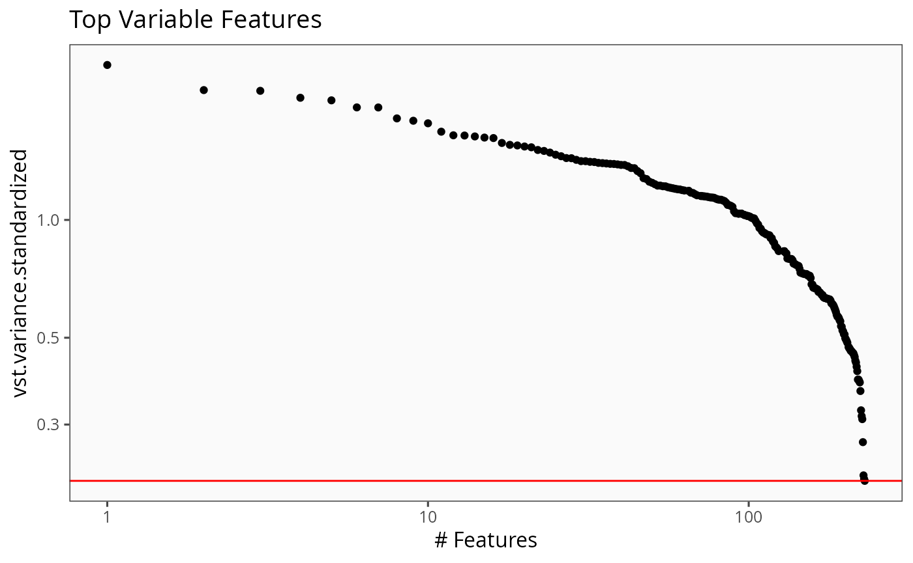
## [1] "ScaleData will use the top 230 variableFeatures"
## [1] "Scale data:"
## [1] "Cell cycle scoring will be skipped"2: Run PCA
pbmc_small <- CellMembrane::RunPcaSteps(pbmc_small)## [1] "Total variable genes: 230"## Warning in irlba(A = t(x = object), nv = npcs, ...): You're computing too large
## a percentage of total singular values, use a standard svd instead.## Warning: Number of dimensions changing from 19 to 50## PC_ 1
## Positive: IFITM2, S100A11, LGALS1, TYROBP, TYMP, LST1, ANXA2, NFKBIA, CTSS, AIF1
## FCER1G, HLA-DPA1, FCN1, RGS2, IFITM3, EIF3G, BID, YWHAB, GSTP1, HLA-DRB1
## Negative: GNG11, GP9, SDPR, CLU, PF4, HIST1H2AC, SPARC, PPBP, CD9, TUBB1
## CA2, ITGA2B, TMEM40, NGFRAP1, NRGN, TREML1, PGRMC1, PTCRA, MYL9, RUFY1
## PC_ 2
## Positive: CST3, LYZ, AIF1, HLA-DRA, LST1, TYMP, HLA-DPB1, IFITM3, HLA-DRB1, CTSS
## S100A8, HLA-DRB5, HLA-DPA1, S100A9, SERPINA1, HLA-DQB1, GRN, FCN1, SAT1, FCGRT
## Negative: CST7, CTSW, GZMA, GZMM, PRF1, NKG7, GNLY, GZMB, FGFBP2, LCK
## GZMH, CD247, CD7, SPON2, LAMP1, AKR1C3, CCL4, KLRD1, C12orf75, RARRES3
## PC_ 3
## Positive: LGALS1, FCER1G, TYROBP, TYMP, S100A9, PSAP, S100A8, SAT1, CFD, IFITM3
## SMCO4, CST3, CD68, FCN1, CTSB, S100A11, SERPINA1, LST1, C5AR1, BID
## Negative: MS4A1, CD79A, TCL1A, HLA-DQB1, HLA-DQA1, HLA-DMB, FCER2, LY86, PPAPDC1B, CD79B
## CYB561A3, KIAA0125, HLA-DQA2, HLA-DRB5, NT5C, HLA-DRB1, CD180, LINC00926, FCRLA, HVCN1
## PC_ 4
## Positive: FGFBP2, GZMB, CCL4, AKR1C3, FCER1G, CLIC3, TTC38, GNLY, KLRD1, IL2RB
## MS4A1, HLA-DRB1, PRF1, GZMH, IGFBP7, CD79A, TCL1A, ARHGDIA, HLA-DPA1, NKG7
## Negative: CD3D, IL7R, SAFB2, MAL, THYN1, CD2, LDHB, ASNSD1, CD3E, LTB
## NOSIP, ACAP1, CCDC104, CCR7, TAGAP, MPHOSPH6, TMEM204, TAF7, DNAJB1, TMEM123
## PC_ 5
## Positive: TNFRSF1B, RP11-290F20.3, MS4A7, LILRA3, FCGR3A, RHOC, WARS, CD68, MYO1G, HCK
## IFI30, SERPINA1, C5AR1, CD79B, IFITM2, FAM96A, LTB, RGS2, EPC1, COPS6
## Negative: MS4A6A, LGALS2, CLEC10A, FCER1A, IL1B, CD14, S100A8, RGS1, GSTP1, ASGR1
## MPEG1, IL17RA, RBP7, HLA-DMA, S100A9, FUOM, LYZ, ZNF330, NUP214, CTSB## Warning in JackStraw(object = seuratObj, num.replicate = 100, verbose = F):
## Number of variable genes given 0.01 as the prop.freq is low. Consider including
## more variable genes and/or increasing prop.freq. Continuing with 3 genes in
## every random sampling.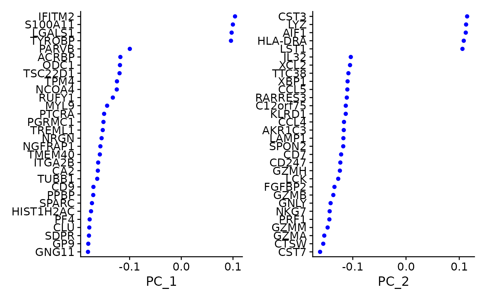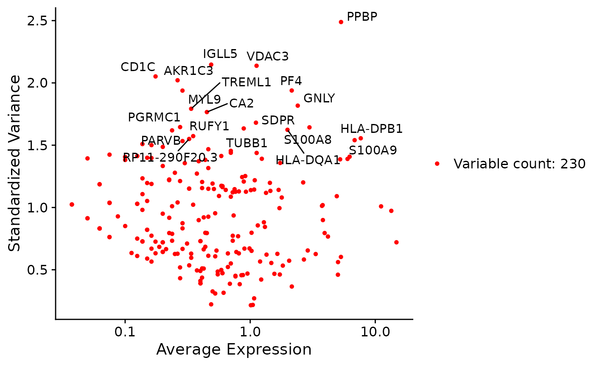 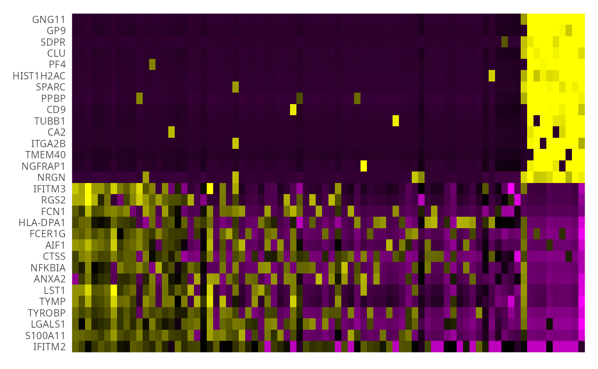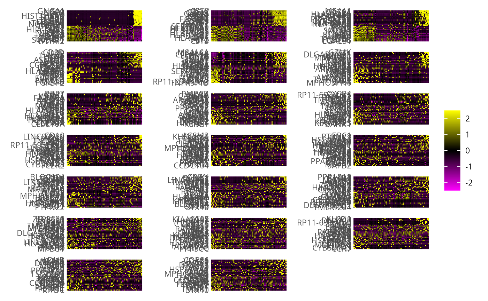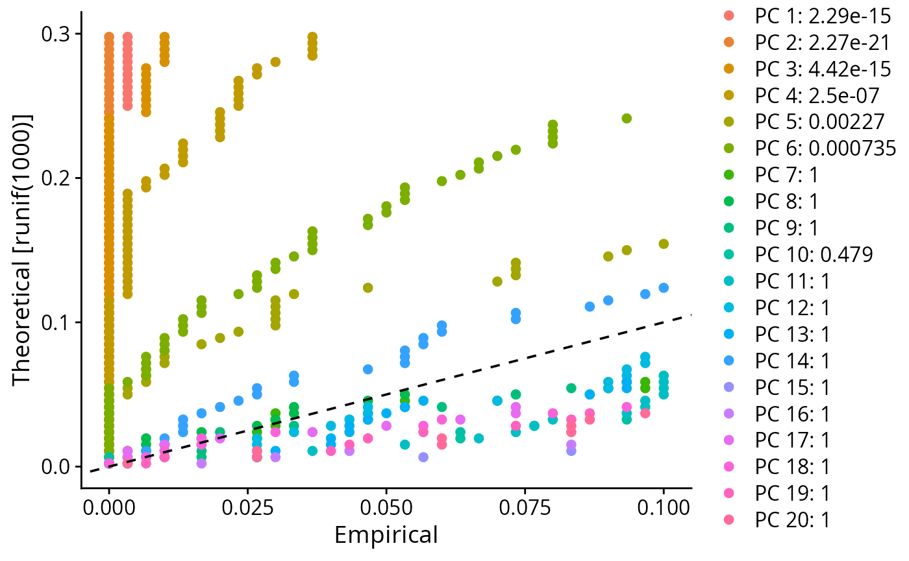
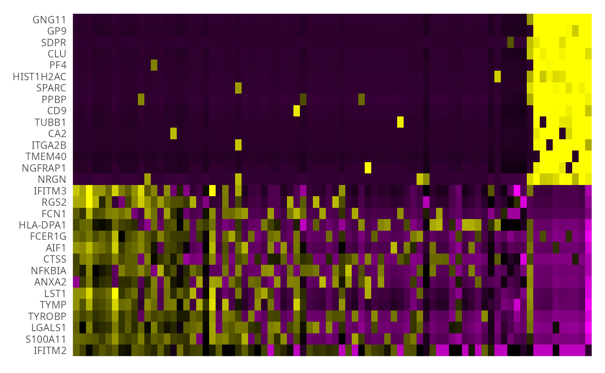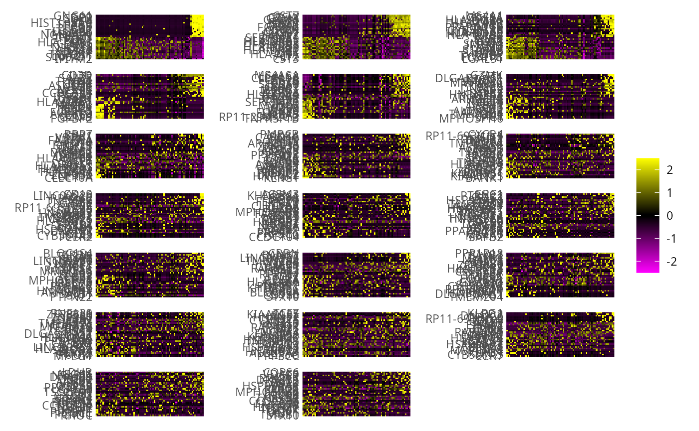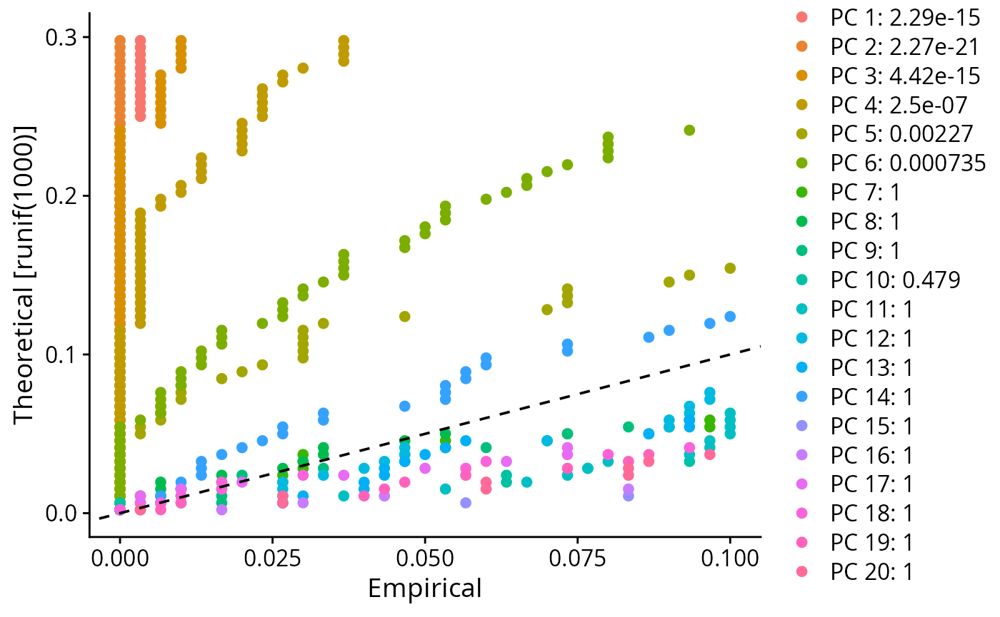
3: Run Clustering (and UMAP/tSNE)
pbmc_small <- CellMembrane::FindClustersAndDimRedux(pbmc_small)## [1] "min.y greater than smallest y"## [1] "Inferred elbow: 7"
## [1] "Selected dimsToUse: 1:7"
## [1] "Perplexity is too large for the number of samples: 80"
## [1] "lowering from 30 to: 26"
## [1] "Setting RunUMAP arg: umap.method to uwot"
## [1] "Setting RunUMAP arg: seed.use to 1234"
## [1] "Setting RunUMAP arg: densmap to FALSE"## Warning: The default method for RunUMAP has changed from calling Python UMAP via reticulate to the R-native UWOT using the cosine metric
## To use Python UMAP via reticulate, set umap.method to 'umap-learn' and metric to 'correlation'
## This message will be shown once per session## Found more than one class "dist" in cache; using the first, from namespace 'spam'## Also defined by 'BiocGenerics'## Found more than one class "dist" in cache; using the first, from namespace 'spam'## Also defined by 'BiocGenerics'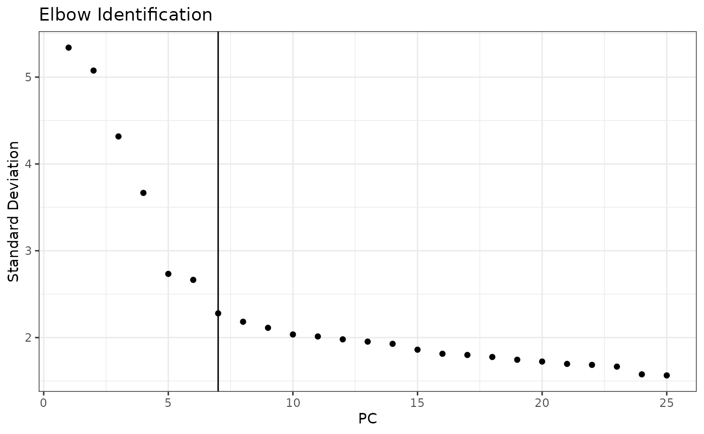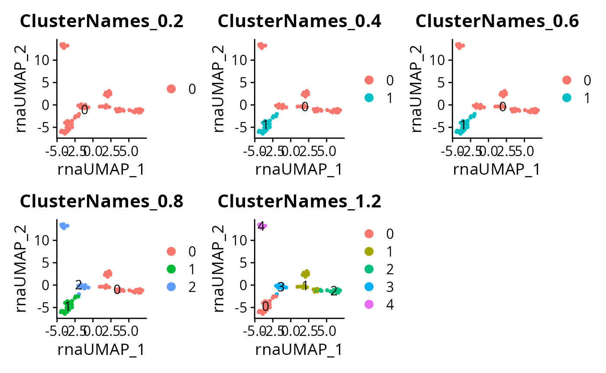
Basic Exploratory Data Investigation
Now, we’re prepared to investigate the data through several tools.
1: Discrete Data Visualizations
For discrete data stored in the pbmc_small@meta.data
data frame (such as clustering identity, subject ID numbers, vaccination
status), we can use Seurat’s DimPlot() to visualize the
data. Clustering identity is computed over several resolutions and
stored in metadata fields named ClusterNames_ + a
resolution parameter (increasing in units of 0.2).
DimPlot(pbmc_small, group.by = 'groups')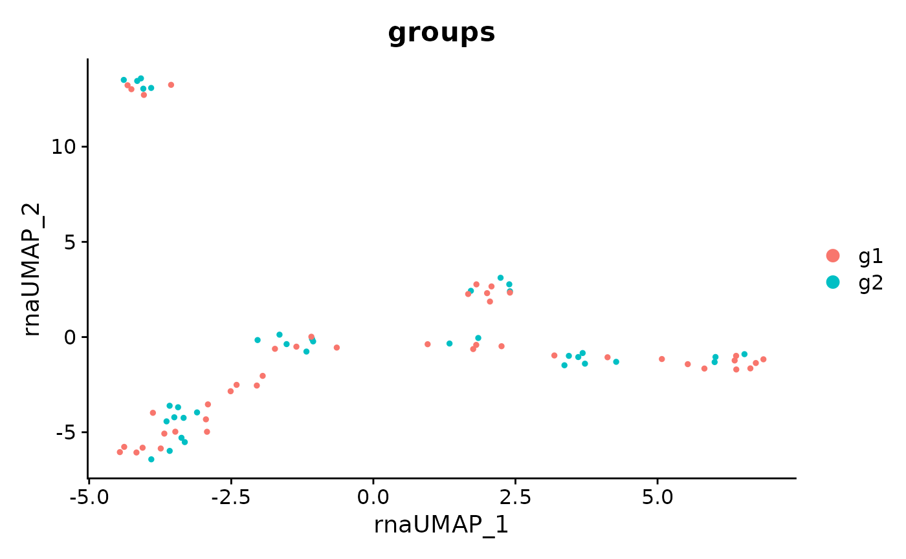
DimPlot(pbmc_small, group.by = 'ClusterNames_0.2')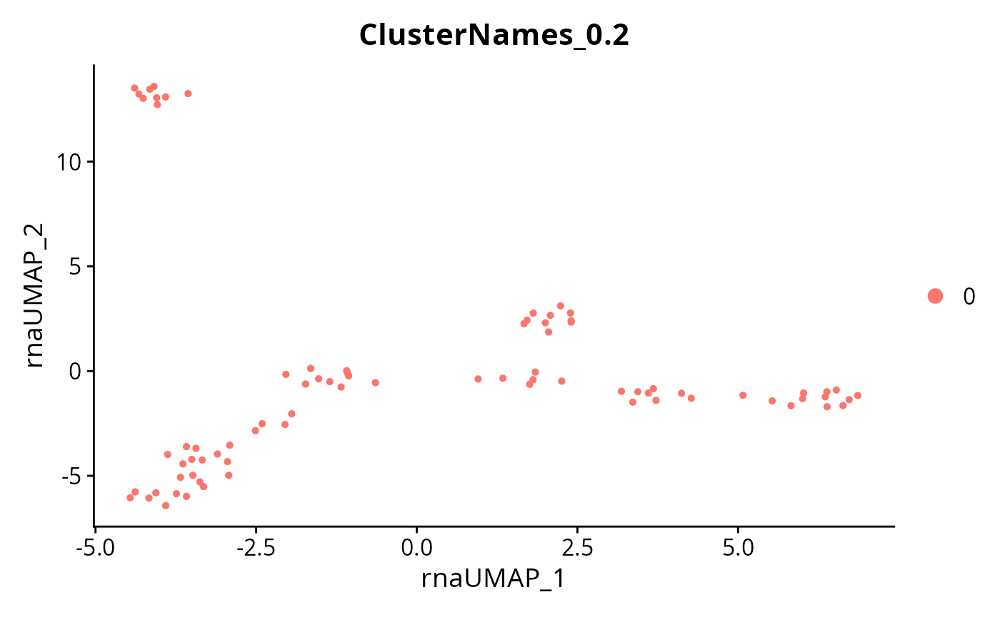
DimPlot(pbmc_small, group.by = 'ClusterNames_0.8')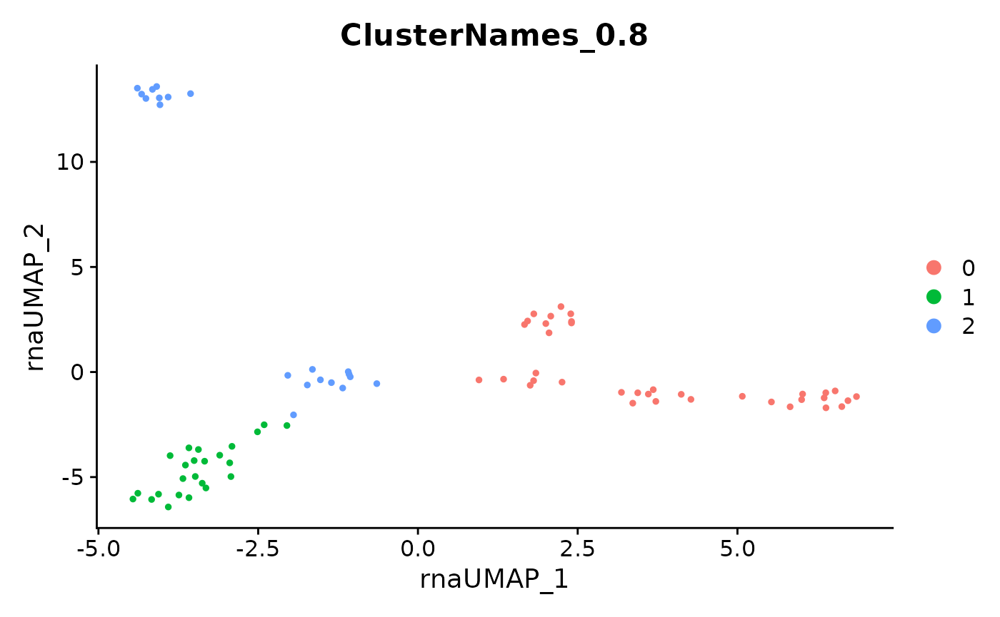
DimPlot(pbmc_small, group.by = 'ClusterNames_1.2')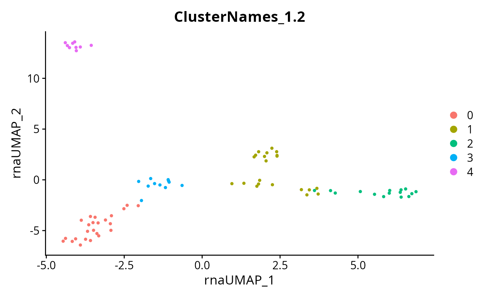
2: Continuous Data Visualization
For continuous variables and expression of individual genes, you can
use Seurat’s FeaturePlot().
FeaturePlot(pbmc_small, features = 'nCount_RNA')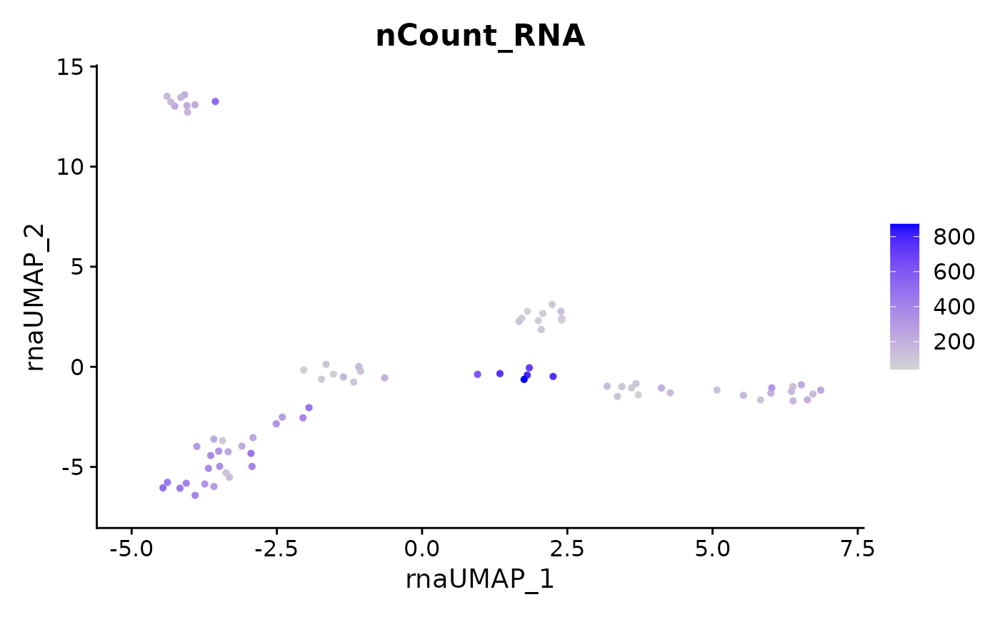
FeaturePlot(pbmc_small, features = 'PPBP')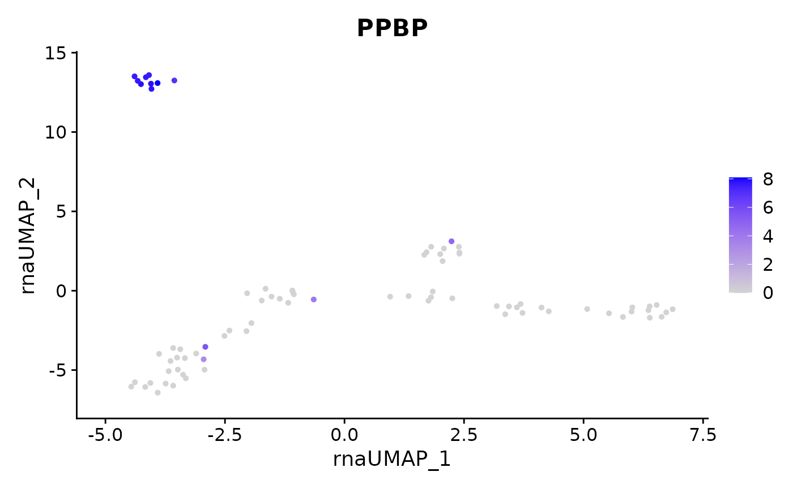
We can combine these observations to conclude that Cluster 4 (at
resolution ClusterNames_1.2) are probably GEMs of platelets
or have heavy platelet contamination due to their high expression of
Pro-Platelet basic protein (PPBP).
Differential Expression
Take heed that p values derived from cluster-based differential expression are statistically invalid, as they suffer from double dipping (please read https://arxiv.org/abs/2301.07276 and related works from the Witten lab). Generally speaking, this means your p values are approximately zero for large swathes of the transcriptome.
However, for determining primary cluster defining markers, we can still use these approaches as long as we don’t use thresholds on the p values to determine differential expression.
To do this, we can use Seurat’s FindMarkers. We need to
specify our groups for differential expression.
1: Targeted Differential Expression
We can perform targeted differential expression (Group 1 = Cluster 4,
Group 2 = Cluster 0 in cluster resolution 1.2) by specifying the
ident.1, ident.2, and the grouping field
group.by arguments.
markers <- FindMarkers(pbmc_small, ident.1 = 4, ident.2 = 0, group.by = "ClusterNames_1.2")## For a (much!) faster implementation of the Wilcoxon Rank Sum Test,
## (default method for FindMarkers) please install the presto package
## --------------------------------------------
## install.packages('devtools')
## devtools::install_github('immunogenomics/presto')
## --------------------------------------------
## After installation of presto, Seurat will automatically use the more
## efficient implementation (no further action necessary).
## This message will be shown once per session
head(markers)## p_val avg_log2FC pct.1 pct.2 p_val_adj
## GP9 3.055940e-08 12.105216 1 0.000 7.028661e-06
## PF4 9.206983e-08 9.001797 1 0.042 2.117606e-05
## SDPR 9.206983e-08 6.794271 1 0.042 2.117606e-05
## GNG11 9.206983e-08 7.938289 1 0.042 2.117606e-05
## CLU 9.206983e-08 6.725616 1 0.042 2.117606e-05
## HIST1H2AC 9.206983e-08 7.013363 1 0.042 2.117606e-05Here we can see that GP9 (platelet glycoprotein) has far more expression in cluster 4 than cluster 0.
2: One versus All Differential Expression
However, we can also perform a “Cluster 4 versus the rest of the
data” comparison. We can leave ident.2 = NULL to specify
that we want to do this one versus all comparison.
markers <- FindMarkers(pbmc_small, ident.1 = 4, ident.2 = NULL, group.by = "ClusterNames_1.2")
head(markers)## p_val avg_log2FC pct.1 pct.2 p_val_adj
## GP9 8.479670e-19 13.670000 1 0.000 1.950324e-16
## PF4 2.816457e-17 10.566582 1 0.014 6.477852e-15
## GNG11 2.816457e-17 9.503074 1 0.014 6.477852e-15
## CLU 2.816457e-17 8.290401 1 0.014 6.477852e-15
## CD9 3.533280e-17 7.467040 1 0.014 8.126545e-15
## SDPR 4.928208e-16 8.154001 1 0.028 1.133488e-133: Marker Sorting and Interpretation
By default, the markers are sorted by lowest p value. You can also sort the data by largest average fold change to find reliable markers.
For information on the pipe symbol %>% used below,
seek information on ‘tidy data’ from Hadley Wickham and his
tidyverse. (https://r4ds.hadley.nz/data-tidy.html)
## p_val avg_log2FC pct.1 pct.2 p_val_adj
## GP9 8.479670e-19 13.670000 1.000 0.000 1.950324e-16
## PTCRA 1.391559e-12 12.954246 0.667 0.000 3.200585e-10
## TMEM40 1.314337e-14 12.401665 0.778 0.000 3.022976e-12
## PF4 2.816457e-17 10.566582 1.000 0.014 6.477852e-15
## GNG11 2.816457e-17 9.503074 1.000 0.014 6.477852e-15
## CA2 4.017473e-15 8.760577 0.889 0.014 9.240187e-13
markers %>%
arrange(-avg_log2FC) %>%
tail()## p_val avg_log2FC pct.1 pct.2 p_val_adj
## LST1 0.008374342 -10.21478 0 0.493 1.0000000
## GNLY 0.082814591 -10.44640 0 0.268 1.0000000
## HLA-DPA1 0.002385780 -10.65441 0 0.592 0.5487293
## TYROBP 0.001066881 -10.73993 0 0.648 0.2453827
## HLA-DRB1 0.002887406 -10.77214 0 0.577 0.6641033
## NKG7 0.008374806 -11.56659 0 0.493 1.0000000We can see that GP9, PTCRA, and TMEM40 are likely good positive
markers of our platelet population, while GNLY, LST1, and HLA-DPA1
should be expressed in other clusters Let’s visualize these using other
standard Seurat functions: DotPlot and
VlnPlot.
DotPlot(pbmc_small, features = c("GP9", "PTCRA", "TMEM40", "LST1", "GNLY", "HLA-DPA1"), group.by = "ClusterNames_1.2")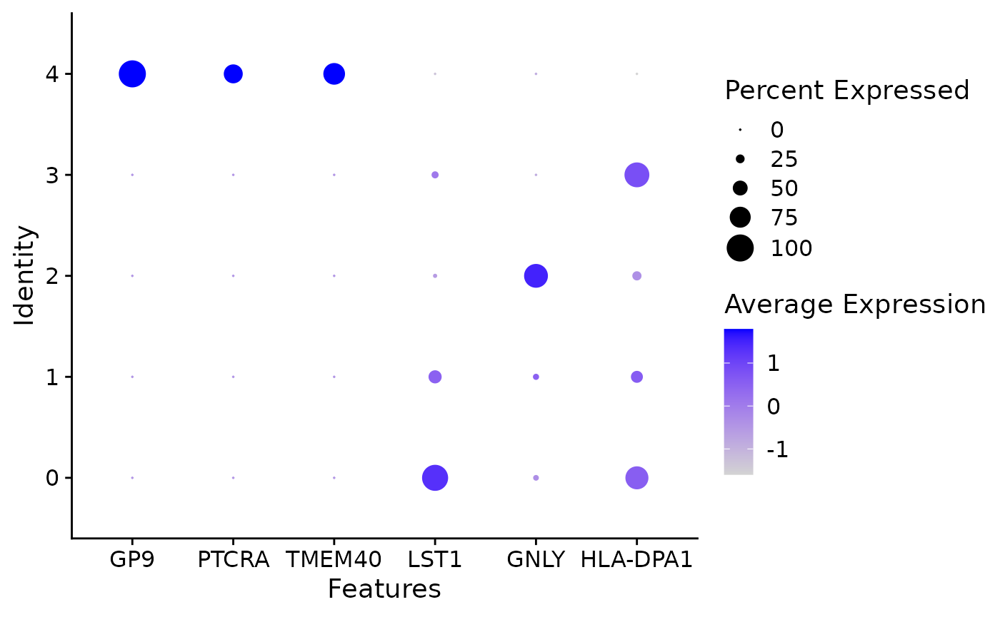
VlnPlot(pbmc_small, features = c("GP9", "PTCRA", "TMEM40", "LST1", "GNLY", "HLA-DPA1"), group.by = "ClusterNames_1.2")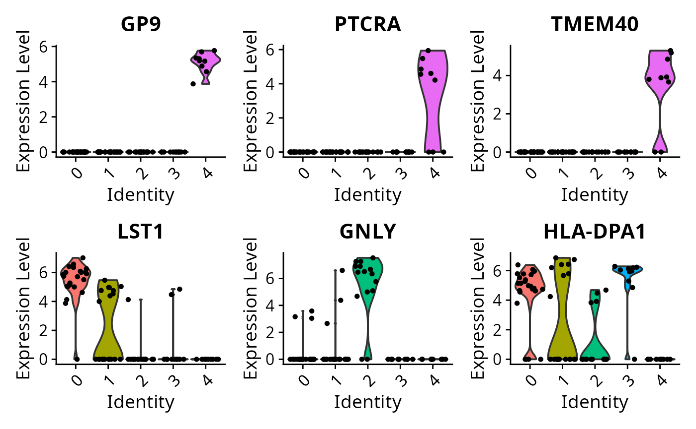
Visualizing your data through unsupervised clustering to find sources of variation in your transcriptomics data is useful and can help you link changes in gene expression to your experimental variables.